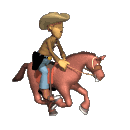
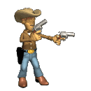
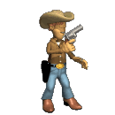

Welcome to the World Wide Web!
You're on the official electronic webpage of QuintOS.
Before the existence of MySpace, Facebook, Instagram, YouTube, Reddit, TikTok, and templating sites like Wix and SquareSpace, the only way to have an online prescence was to make your own website.
When HTML was created in 1993, making a website was simple and people didn't have high expectations regarding what a website should look like or what it should do. People were just excited to be on the net!
These days a lot of websites all look the same but back in the 90s the World Wide Web was like the Wild Wild West. Every website had a different design. Even big brands published sites that were super experimental. You can take a look at web design from this era on this website: www.webdesignmuseum.org
 